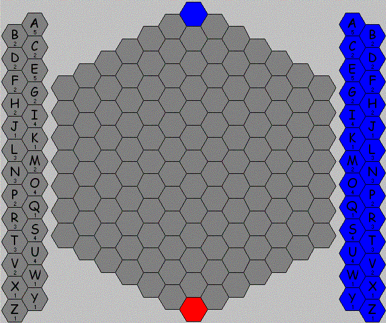
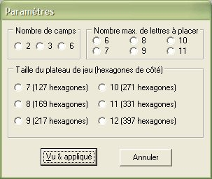

Présentation du jeu
Osmotik est un amalgame de mots-mêlés et de wargames.
Le but du jeu est celui d'un wargame : s'étendre le plus possible et détruire son ou ses ennemis.
Le seul moyen d'arriver à ses fins est de former des mots de 2 à 15 lettres dans tous les sens.
Le dictionnaire de référence est l'ODS 8ème édition (2020) avec 402 325 mots de 2 à 15 mots.
Le terrain de la bataille est un hexagone composé pouvant aller de 127 jusqu'à 397 cases hexagonales.
Description du jeu

L'espace de jeu est composé de 3 parties :
Au milieu, il y a le plateau de jeu sur lequel on pose des lettres (de une à huit par tour selon les paramètres de jeu).
À droite du plateau de jeu, sont affichées toutes les lettres de l'alphabet.
Ce sont les lettres dont dispose le joueur courant (son jeu).
Elles sont de la même couleur que celle du joueur sauf les lettres que le joueur ne dispose pas et qui sont en foncé.
Au départ du jeu, chaque joueur dispose de toutes les lettres de l'alphabet en un certain nombre d'exemplaires.
Le nombre d'exemplaires de chaque lettre dont dispose le joueur courant est inscrit sous la lettre.
À gauche du plateau de jeu, il y a également toutes les lettres de l'alphabet.
Sous chaque lettre est inscrit un nombre de points.
Celui-ci a deux significations : ce nombre de points permet à un joueur de gagner une lettre supplémentaire dans son jeu.
Si une de ses lettres sur le plateau de jeu atteint ce nombre de points, il clique dessus et obtient dans son jeu un exemplaire supplémentaire de cette lettre.
La deuxième signification est le nombre d'exemplaires au départ du jeu.
Déroulement du jeu
Le jeu se joue à 2, 3 ou 6 joueurs (l'ordinateur ne participe).
Chaque joueur dispose au départ des 26 lettres de l'alphabet en un nombre d'exemplaires indiqué à gauche du plateau de jeu.
Dans chaque tour de jeu et pour chaque joueur, il y a 2 actions différentes possibles :
La capitalisation de lettres
Le joueur récupère de nouvelles lettres en cliquant dans le plateau de jeu sur toutes les lettres de sa couleur qui ont un score supérieur ou égal à celui indiqué dans le jeu de gauche (elles sont d'apparence plus pâles et le curseur prend alors la forme +1).
Ce nombre de points est retiré du score de la lettre sur le plateau.
La pose de lettres
Le joueur doit choisir au moins une lettre des lettres de son jeu (à droite) pour les poser ensuite sur le plateau de jeu (au centre).
Pour ce faire il doit d'abord taper les lettres souhaitées directement au clavier l'une après l'autre. Les lettres apparaissent dans le champ blanc en haut à droite du plateau de jeu.
Si la lettre tapée n'apparaît pas c'est que celle-ci n'est pas disponible dans son jeu (à droite du plateau de jeu : la lettre apparaît en foncé).
Les lettres doivent être tapées dans l'ordre où elles vont être posées sur le plateau.
Une fois les lettres tapées, il faut cliquer sur la case libre où sera posé la première lettre. Ensuite il faut choisir la direction dans laquelles seront posées les autres lettres.
Au premier tour le joueur doit obligatoirement choisir la case de sa couleur.
Les lettres doivent former un mot. Ce mot est appelé mot principal :
- D'une part, toutes les lettres posées doivent obligatoirement participer à la formation du mot principal.
- D'autre part, au moins une lettre de la couleur du joueur courant déjà sur le plateau de jeu doit également participer à ce mot principal sauf lors du premier tour bien évidemment.

Dans l'exemple ci-dessus, le joueur bleu tape sur le clavier les lettres M,U,R,S puis clique sur la case (1,4) - où se trouve la lettre M - et choisit enfin la direction à 8h (bas/gauche). Le résultat est le mot MURES : toutes les lettres placées sont dans le mot MURES (mûres) et le E est une lettre bleue déjà placée.
Mais attention, il n'y a pas de sens, le joueur aurait très bien pu taper S,R,U,M puis cliquer sur la case (5,4) - où se trouve la lettre S - et enfin choisir la direction opposée à 2h (haut/droite). Le résultat aurait été le même !
Passer son tour
Un joueur passe son tour lorsqu'il ne pose aucune lettre pendant son tour de jeu.
Attention : on considère aussi qu'un joueur qui ne fait que réapprovisionner son jeu en lettre(s) passe son tour.
Un joueur peut passer son tour, il n'est pas obligé de jouer sauf au premier tour : on est obligé de poser un mot.
Si un joueur ne peut pas jouer, il doit passer son tour.
Un joueur n'est jamais retiré définitivement du jeu : la pose de nouvelles lettres peut permettre à un autre joueur de former enfin un mot.
Cases départ
À 6 joueurs, on part des coins du plateau de jeu.
À 3 joueurs, on part d'un coin sur deux.
À 2 joueurs, les coins sont opposés.
Score des lettres
Le nombre inscrit en dessous d'une lettre a trois significations suivant où elle se situe :
- Si elle se situe sur le plateau de jeu, il s'agit du score de la lettre (appartenant au joueur de la même couleur).
- Si elle se situe à droite du plateau, il s'agit de son nombre d'exemplaires dans le jeu du joueur courant.
- Si elle se situe à gauche du plateau, il s'agit du score minimal que doit avoir une lettre du plateau pour réapprovisionner le jeu de son propriétaire d'un exemplaire supplémentaire. Il s'agit également du nombre d'exemplaire au départ du jeu pour chaque joueur.
Décompte des mots formés
Après pose des lettres, on comptabilise chaque mot vérifiant les conditions suivantes :
- Il contient une lettre qui vient d'être posée (ou toutes les lettres posées pour un mot principal).
- Les lettres formant le mot sont contiguës et alignées dans n'importe quelle direction.
- Il n'est pas contenu dans un autre mot formé dans le même sens ou le sens opposé.
Exemple : le mot REMERCIER contient MERCI (REMERCIER) et CREME (REMERCIER).


Dans l'exemple ci-dessus, les rouges posent les lettres B,E,U,R,E (images 1 & 2) afin de former le mot principal BEURRE (image 3) avec le R rouge déjà placé.
Les autres mots formés dans d'autres directions sont EU (image 4) avec le E bleu puis RE (ré) avec le E rouge (image 5) ce qui donne la situation finale (image 6).
Note : lorsque les mots sont montrés en blancs, les lettres noires sont les lettres posées et les lettres grisées sont les lettres qui étaient déjà présentes sur le plateau de jeu.
Cas particulier des mots formés sur la ligne du mot principal
Les mots formés sur la ligne où se situe le mot principal (celui qui contient toutes les lettres posées), doivent contenir également toutes les lettres posées. Tous les autres mots formés sur ladite ligne ne sont pas comptabilisés.

Dans l'exemple ci-dessus, la première image montre que les bleus posent TARTE puis les rouges BIERE (bière).
Dans la deuxième image, les bleus posent les lettres P,A,V en (5,5) à 6h.
Dans la troisième image, on voit le mot principal formé : EPAVE (épave) où le E est la lettre bleue déjà posée. Le mot principal utilise une lettre adverse rouge un autre E.
Dans la quatrième image, on constate qu'un deuxième mot est formé sur la ligne du mot EPAVE : le mot PAVER. Ce dernier est comptabilisé car :
- il n'est pas contenu dans le mot EPAVE.
- il contient toutes les lettres posées (P,A,V).
Par contre, sur la troisième image, le mot REVA, qui commence par le R rouge et finit par le A blanc, n'est pas comptabilisé car il ne contient pas la lettre posée P.
Décompte des points
Lors du décompte des mots formés, à chaque fois qu'une lettre (déjà placée ou non) compose un nouveau mot, elle voit son score :
- Augmenter d'1 point s'il s'agit d'une lettre du joueur courant.
- Diminuer d'1 point s'il s'agit d'une lettre appartenant à un adversaire.
Dans le cas où la lettre a un score nul et appartient à un adversaire, elle passe alors du côté du joueur courant et son score passe à 1 point.
Le score de chaque joueur est la somme des nombres de lettres de tous les mots formés.
Autrement dit, une lettre donne autant de points que le nombre de fois qu'elle permet de former un mot.
Dans les deux exemples précédents (mots principaux EPAVE et BEURRE), voici les scores obtenus :

Légende du tableau de comptabilisation des mots et des points
Pts = nombre de points marqués (1 point par lettre de chaque mot formé comptabilisé : 2x5=10 pts dans l'exemple 1).
pa = nombre de points accumulés (points accumulés sur les lettres du même camp : lettres bleues E,P,A,V dans l'exemple 1).
pp = nombre de points pris à l'adversaire (points retirés des lettres adverses : lettres rouges E,R dans l'exemple 1).
lp = nombre de lettres prises à l'adversaire (le E rouge dans l'exemple 1).
Les lettres soulignées sont les lettres qui ont été posées.
La couleur des lettres reflète l'appartenance après comptabilisation des points.

À chaque fin de tour, le score cumulé de tous les camps s'affiche par ordre décroissant des points. Le vainqueur virtuel est donc celui qui apparaît en tête.
La figure ci-dessus donne le score des bleus et des rouges après 2 tours (tours 0 et 1) dans l'exemple précédent.
Légende du tableau de fin de tour du cumul des points
Pts = nombre des points marqués.
j = nombre de jetons sur le plateau de jeu.
paa = nombre de points pris à l'adversaire.
laa = nombre de lettres prises à l'adversaire.
ppa = nombre de points pris par l'adversaire.
lpa = nombre de lettres prises par l'adversaire.
Fin de partie
La partie s'arrête dans deux cas :
- Dès qu'il n'y a plus de cases libres sur le plateau de jeu.
- Si, pendant un tour de jeu complet, tous les joueurs ont passé leur tour (suite à impossiblité de jouer ou non).
Le gagnant
Le gagnant est celui qui a obtenu le plus de points.
En cas d'égalité, c'est celui qui a le plus de jetons sur le plateau qui gagne.
Lancement d'une partie
Pour jouer une partie, il suffit de choisir la rubrique Nouvelle... dans le menu Partie ou appuyer sur la touche F4.

Il faudra alors définir :
- Le nombre de camps - automates & humains (2, 3 ou 6).
- Le nombre maximum de lettres à poser par tour et par camp (de 6 à 11 lettres maximum).
- La taille du plateau de jeu (de 7 à 12 hexagones par côté).
Il y a une contrainte : le nombre d'hexagones de côté est toujours supérieur au nombre maximum de lettres à poser par tour et par camp.
Dès que tout est prêt, il faut appuyer sur le bouton Vu & appliqué.
La couleur des joueurs est automatique suivant le nombre des joueurs (le jeu tourne dans le sens des aiguilles d'une montre) :
Dans une partie à 6 joueurs : bleu, rouge, jaune, vert, magenta, ciel.
Dans une partie à 3 joueurs : bleu, rouge, jaune.
Dans une partie à 2 joueurs : bleu, rouge.
Note : L'ordinateur ne joue pas, il se contente de comptabiliser automatiquement les mots et les points.
Dernière mise à jour le 4 décembre 2019.